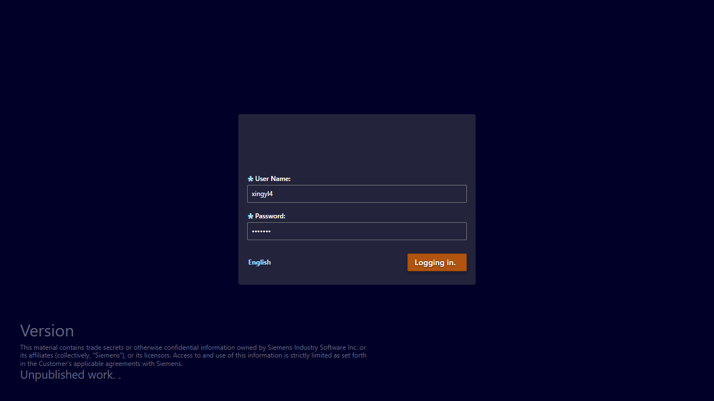
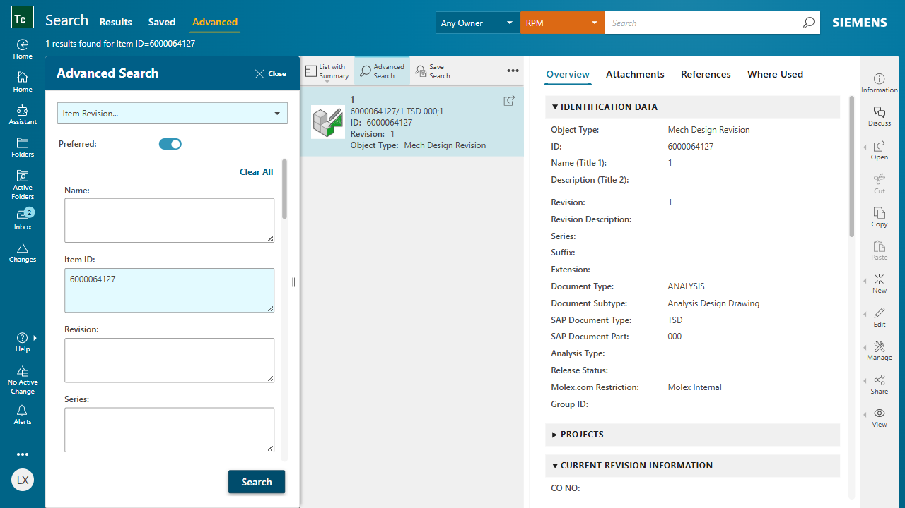
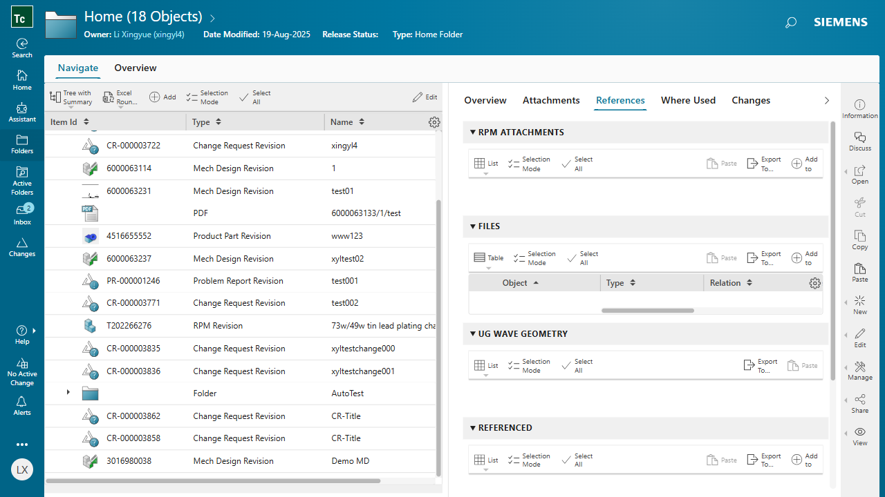
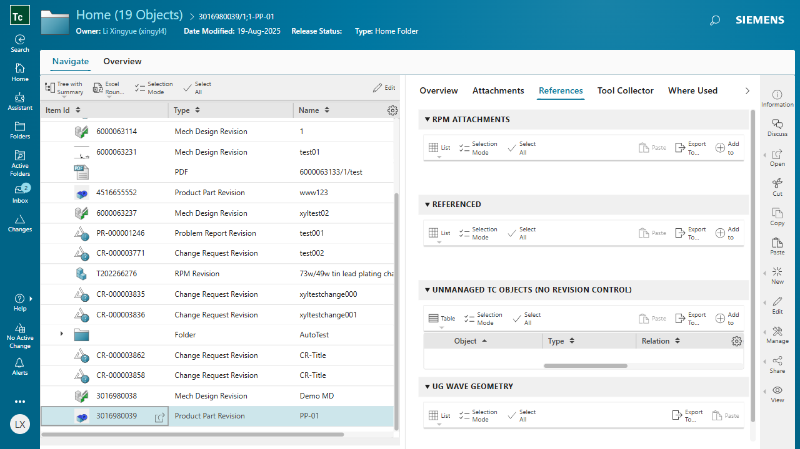
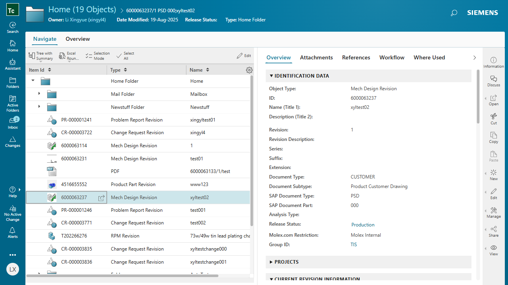

Run Report
Flow: test-flow-developer Generated: 8/19/2025, 3:55:24 PM
PASSED
login
2025-08-19T07:53:04.299Z → 2025-08-19T07:53:08.763Z
{
"username": "xingyl4"
}

PASSED
01-advancedSearch
2025-08-19T07:53:08.870Z → 2025-08-19T07:53:24.645Z
{
"search_id": "6000064127",
"advanced_query_type": "Item Revision...",
"search_type": "Item Revision"
}

PASSED
02-createMechDesign
2025-08-19T07:53:24.819Z → 2025-08-19T07:54:13.822Z
{
"created_id": "3016980038",
"name": "Demo MD"
}

PASSED
03-createProductPart
2025-08-19T07:54:14.159Z → 2025-08-19T07:54:54.404Z
{
"created_id": "3016980039",
"ITEM_NAME": "PP-01"
}

FAILED
04-saveAs
2025-08-19T07:54:54.510Z → 2025-08-19T07:55:24.625Z
locator.click: Timeout 30000ms exceeded.
Call log:
�[2m - waiting for locator('div.aw-splm-tableCellText[title="3016980037"]').first()�[22m
at navigateToSaveAs (C:\document\AutoTest\tc-flow-framework-v4.2\src\steps\step-save-as.ts:51:81)
at async saveAs (C:\document\AutoTest\tc-flow-framework-v4.2\src\steps\step-save-as.ts:19:3)
at async runStep (C:\document\AutoTest\tc-flow-framework-v4.2\src\core\flow.ts:66:10)
at async withRetry (C:\document\AutoTest\tc-flow-framework-v4.2\src\core\retry.ts:12:14)
at async runFlow (C:\document\AutoTest\tc-flow-framework-v4.2\src\core\flow.ts:203:24)
at async <anonymous> (C:\document\AutoTest\tc-flow-framework-v4.2\src\main.ts:9:3)
